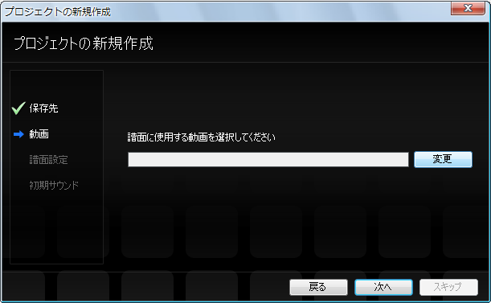

Primero, prepare el vídeo que va a usar. (Aquí lo llamaremos movie.mp4)
Inicie PPDEditor y seleccione Archivo → Abrir → Nuevo proyecto.

Aparece el diálogo de nuevo proyecto. Siga el diálogo para configurarlo.
Primero, seleccione dónde guardar el proyecto. Normalmente puede dejarlo como está y pulsar el botón Siguiente.

A continuación, seleccione el vídeo que va a usar.
Pulse el botón Cambiar para abrir un diálogo, vaya a la carpeta donde está movie.mp4, selecciónelo y pulse OK.


A continuación, configure el nombre y el perfil de la partitura.
Como nombre de la partitura, introduzca el nombre de la canción (añada algo más descriptivo si lo tiene).
Como perfil, seleccione AC si quiere una partitura de estilo AC. (Si no sabe qué es AC, Normal está bien.)
(※Se puede cambiar después de crear el proyecto)

A continuación, configure el sonido inicial.
Normalmente puede dejar el sonido que aparece (una pandereta).
(※Se puede cambiar después de crear el proyecto)

Pulse el botón Finalizar.

Probemos a reproducir y pausar el vídeo.
Primero, ponga el foco en la línea de tiempo (o en la ventana de juego). Se vuelve gris cuando tiene el foco.

Con la línea de tiempo (o la ventana de juego) enfocada, pulse la tecla Espacio
para alternar entre reproducir y pausar.
También puede reproducir, pausar y detener desde la barra de menús.

A continuación, haga la configuración inicial de la partitura.
Siguiente